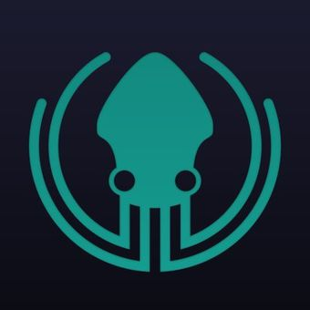
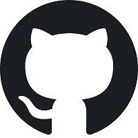

A propos de moi
De mes expériences de cadre dans l'action sociale, je garde, entre autres, une grande ouverture d'esprit et de fortes valeurs de solidarité. J'ai décidé de me tourner vers le web, car je crois profondément que l'outil numérique, par l'efficacité qu'il apporte, doit se mettre au service de l'humain, et replacer les relations humaines au centre des préoccupations des organisations.
Mes réalisations
Cliquez sur les images pour vous rendre sur les dépôts git ou sur les sites web que j'ai créés, soit dans le cadre de ma formation, soit dans le cadre personnel.
Technologies utilisées : PHP, Symfony, NuxtJS, Strapi, Wordpress

Mes compétences
- Gestion de projet
- Négociation
- Adaptabilité et autonomie
- Aisance rédactionnelle
- Esprit de synthèse
- Aisance relationnelle et écoute


- 
- 